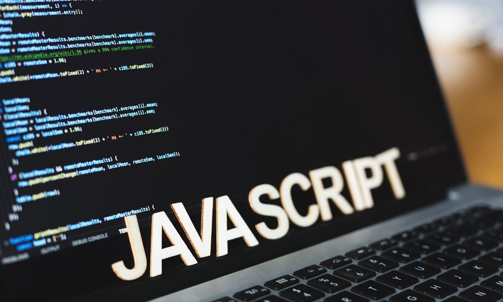

PRÉSENTATION DE LA FORMATION
Pourquoi choisir la formation DUT ?
Que faire après un baccalauréat général ou technologique ? Pourquoi ne pas choisir la formation en IUT (Institut Universitaire de Technologie) ? Après s’être inscrit sur ParcourSup, l’admission se fait sur dossier, lettre de motivation (voire lettre de recommandation), éventuellement sur tests ou entretien de motivation. La force majeure de cette filière est l’encadrement pédagogique.
Les enseignements sont assurés par une équipe d’enseignants universitaires, d’enseignants-chercheurs universitaires et de professionnels. Cette diversité permet aux étudiants de croiser les points de vue et les expériences et de se nourrir d’une pluralité évidente. Sur les deux années, durant les quatre semestres, en plus des partiels de mi-semestre (tous les 3 mois) et de fin de semestre, la notation prend également en compte le contrôle continu, c’est à dire les rendus lors des travaux dirigés, les devoirs surveillés organisés par les enseignants, etc… Contrairement aux universités, où seuls les partiels comptent.
L'IUT informatique en quelques mots
Les spécificités de l’IUT informatique sont nombreuses. Tout au long de la formation, les étudiants travaillent sur des environnements de travail distincts, tels que Linux ou bien Windows, pour apprendre sur différents supports.
Des méthodes de travail innovantes par rapport au lycée sont également enseignées, notamment les méthodes agiles. Ces méthodes de conduite de projets visent à impliquer le client dans l’avancée du développement et à lui montrer la production de l’équipe de manière régulière. Ces nouvelles approches s’opposent aux méthodes de travail en cascade, c’est à dire de planifier, dès le début, le déroulement complet du projet (de la conception au rendu final). Les projets effectués tout au long du cursus permettent de mettre en pratique les techniques apprises.
Les langages tels que le HTML, CSS, PHP, JavaScript, SQL, Python, Java, C, C++, ADA ou bien le XML (en programmation mobile) sont enseignés durant les quatre semestres.
En parallèle des enseignements, de nombreux évènements sont organisés au sein d’un institut. Par exemple, des forums IUT - entreprises ont lieu, durant lesquels les étudiants peuvent rencontrer directement des professionnels du milieu pour trouver un stage par exemple. Il existe également des forum permettant de se renseigner sur les poursuites d’étude, de simuler des entretiens d’embauche professionnels, etc…